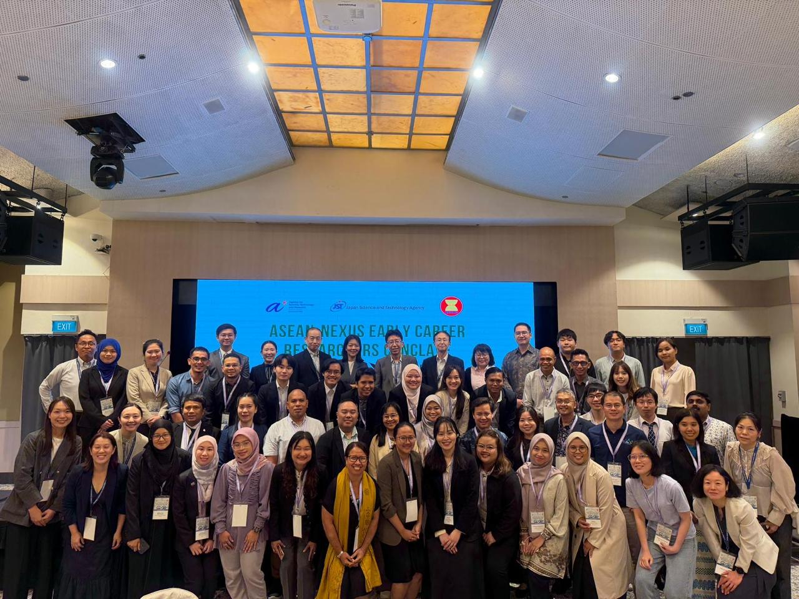
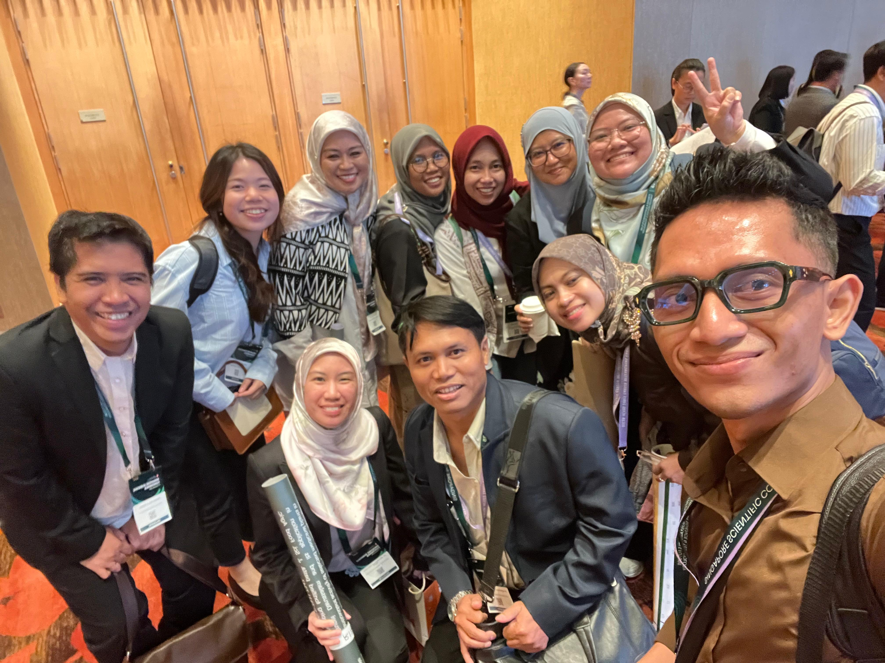
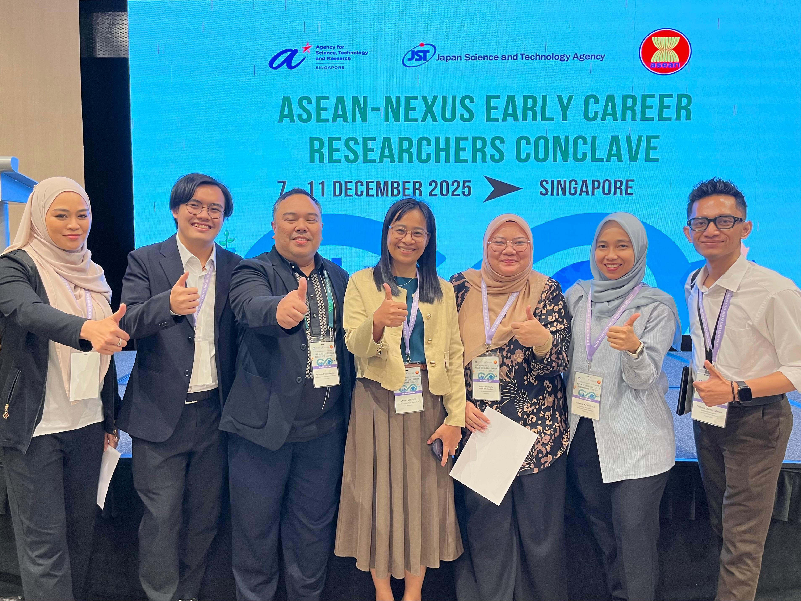

The ASEAN-NEXUS Early Career Researchers Conclave was held from 7–11 December 2025 in Singapore, alongside the Singapore Scientific Conference. This event brought together early-career researchers from across ASEAN and leading global research institutions.
The conclave was an inspiring opportunity to engage with outstanding scholars and young researchers who share a strong commitment to collaboration and scientific excellence. Throughout the program, participants exchanged ideas, discussed emerging research challenges, and explored opportunities for interdisciplinary and international collaboration.
One of the most valuable aspects of this event was the opportunity to interact with leading global researchers and highly motivated early-career scientists from diverse fields. These discussions highlighted the importance of building strong regional research networks to address complex sustainability challenges facing Southeast Asia.
The event emphasized the collective vision of strengthening research collaboration across ASEAN in order to advance sustainable development and regional resilience. The program was jointly organized through a collaboration between A*STAR (Agency for Science, Technology and Research, Singapore) and the Japan Science and Technology Agency (JST).

